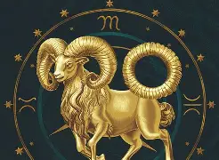
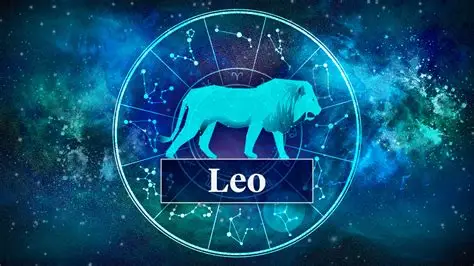
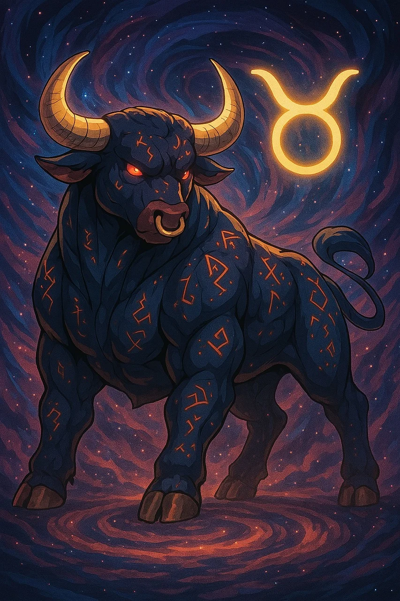
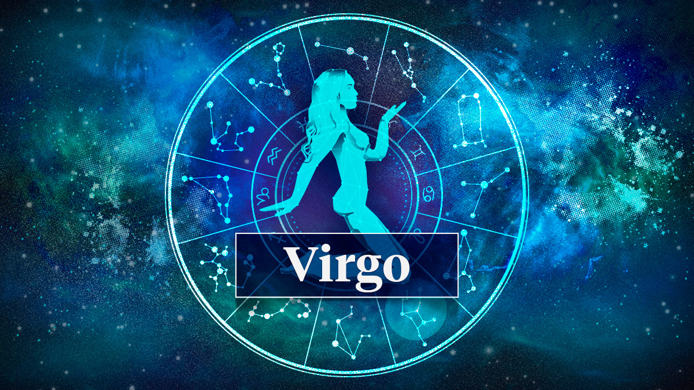
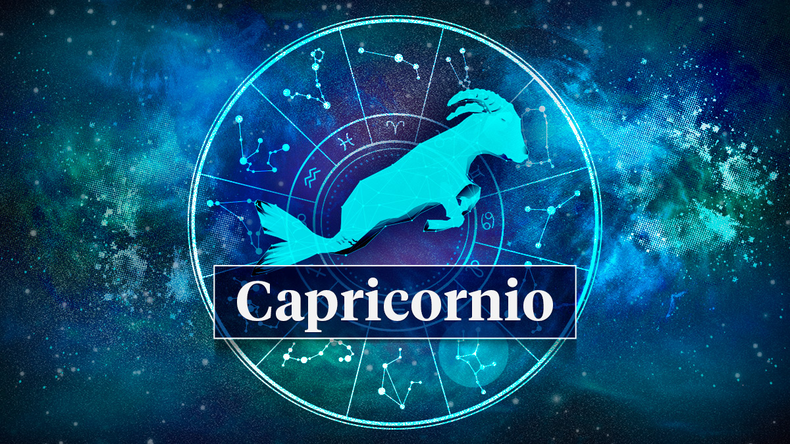
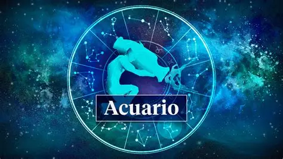
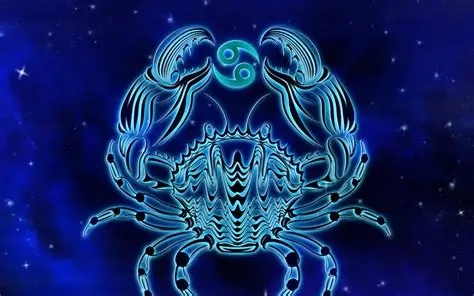
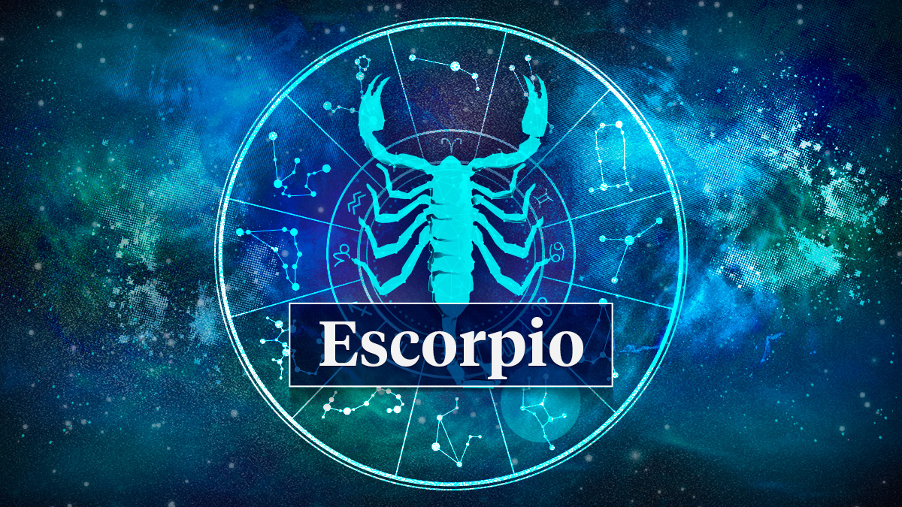
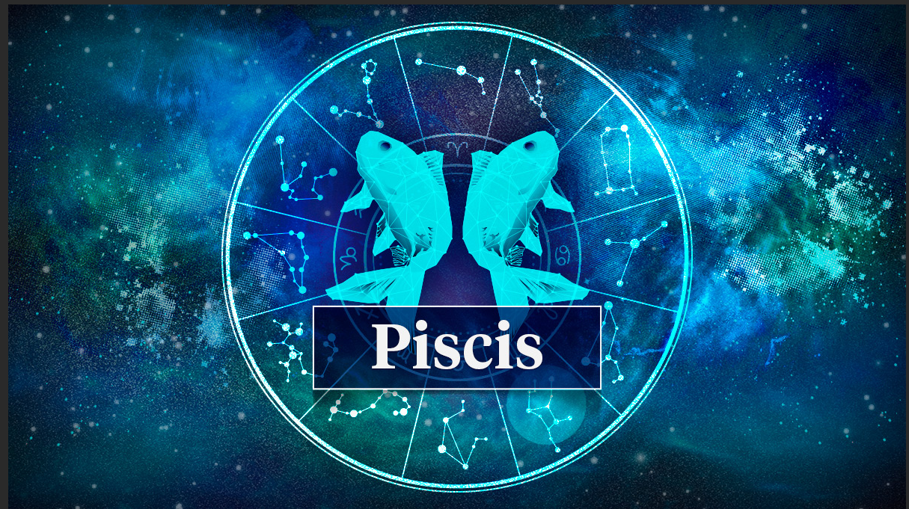

<<<<<<< HEAD Document
Mi pagina signos zodiacales
signos zodiacales
- Aries (21 de marzo – 19 de abril): Enérgico, valiente, impulsivo y directo.

- Leo (23 de julio – 22 de agosto): Confiado, generoso, carismatico y líder natural

- Sagitario (22 de noviembre – 21 de diciembre): Aventurero, optimista, independiente y filosófico.

- Tauro (20 de abril – 20 de mayo): Perseverante, paciente, leal y amante de la comodidad.

- Virgo (23 de agosto – 22 de septiembre): Meticuloso, analítico, perfeccionista y práctico.

- Capricornio (22 de diciembre – 19 de enero): Ambicioso, disciplinado, responsable y trabajador

- Géminis (21 de mayo – 20 de junio): Curioso, sociable, versátil y comunicativo.
- Libra (23 de septiembre – 22 de octubre): Diplomático, equilibrado, sociable y amante de la armonía.

- Acuario (20 de enero – 18 de febrero): Innovador, independiente, humanitario y original

- Cáncer (21 de junio – 22 de julio): Sensible, protector, familiar e intuitivo.

- Escorpio (23 de octubre – 21 de noviembre): Intenso, apasionado, misterioso y profundo.

- Piscis (19 de febrero – 20 de marzo): Soñador, empático, intuitivo y compasivo
